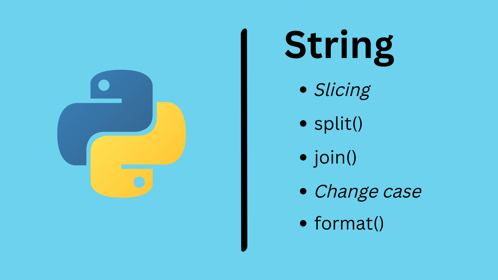

Blog pribadi tempat berbagi pengetahuan.
Beberapa cara yang dapat digunakan untuk mengganti nama kolom pada data tabel menggunakan Pandas
Ringkasan cara membaca data tabel dari berbagai format menggunakan Pandas

Ringkasan pengolahan data tipe string pada Python mulai dari pendeklarasian variabel hingga metode manipulasi yang umum dilakukan.
Ringkasan pengolahan file menggunakan built-in function pada Python.
Contoh pemanfaatan fitur input-ouput dalam Python.
Beberapa cara yang digunakan dalam memfilter data menggunakan Pandas.
Dasar-dasar library Pandas yang perlu diketahui.
Membuat Pandas Dataframe
Mengolah data menggunakan Pandas: membaca data, menambah kolom dan menyimpan ke dalam file baru.
Beberapa environtmen umum yang digunakan programmer untuk membuat dan mengembangkan program Python
Beberapa alasan kenapa Bahasa Pemrograman Pyhon layak untuk dipelajari